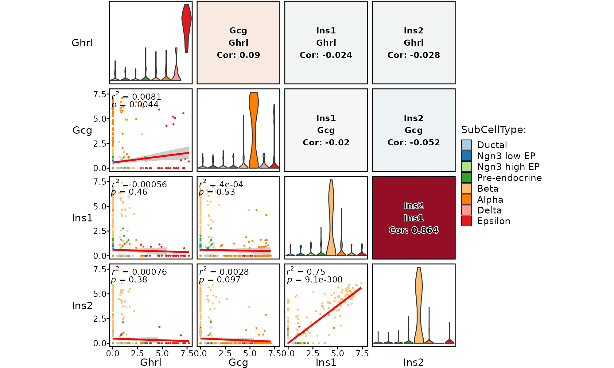

Features correlation plot
Usage
ExpCorPlot(
srt,
features,
group.by = NULL,
split.by = NULL,
cells = NULL,
slot = "data",
assay = "RNA",
cor_method = "pearson",
adjust = 1,
margin = 1,
reverse = FALSE,
add_equation = FALSE,
add_r2 = TRUE,
add_pvalue = TRUE,
add_smooth = TRUE,
palette = "Paired",
palcolor = NULL,
bg_color = "grey80",
pt.size = NULL,
pt.alpha = 1,
cells.highlight = NULL,
cols.highlight = "black",
sizes.highlight = 1,
alpha.highlight = 1,
stroke.highlight = 0.5,
calculate_coexp = FALSE,
raster = NULL,
raster.dpi = c(512, 512),
theme_use = "theme_scp",
title = NULL,
subtitle = NULL,
legend.position = "right",
legend.direction = "vertical",
combine = TRUE,
nrow = NULL,
ncol = NULL,
byrow = TRUE,
align = "hv",
axis = "lr",
force = FALSE
)Examples
data("pancreas_sub")
pancreas_sub <- Standard_SCP(pancreas_sub)
#> [2022-12-08 11:19:05] Start Standard_SCP
#> [2022-12-08 11:19:05] Checking srtList... ...
#> Data 1/1 of the srtList is raw counts. Perform NormalizeData(logCPM) on the data ...
#> Perform FindVariableFeatures on the data 1/1 of the srtList...
#> Use the separate HVF from the existed HVF in srtList...
#> Number of available HVF: 2000
#> [2022-12-08 11:19:07] Finished checking.
#> [2022-12-08 11:19:07] Perform ScaleData on the data...
#> [2022-12-08 11:19:08] Perform linear dimension reduction (pca) on the data...
#> dims_estimate is 1:18 for 'pca'
#> [2022-12-08 11:19:10] Perform FindClusters (louvain) on the data...
#> [2022-12-08 11:19:10] Reorder clusters...
#> [2022-12-08 11:19:10] Perform nonlinear dimension reduction (umap) on the data...
#> [2022-12-08 11:19:22] Standard_SCP done
#> Elapsed time: 16.53 secs
ExpCorPlot(pancreas_sub, features = c("Ghrl", "Gcg", "Ins1", "Ins2"), group.by = "SubCellType")
#> Loading required package: ggrepel
